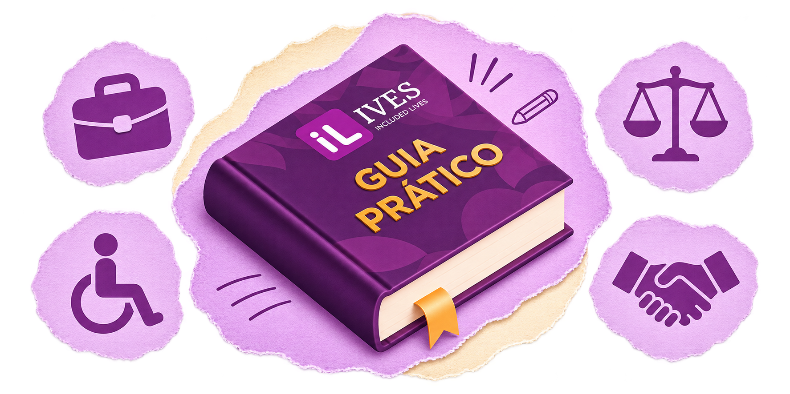

Trabalho com acessibilidade e direitos

Sou candidato
Prepare seu currículo
Mostre o que você sabe fazer
Comece com seu nome, cidade e um contato atualizado. Indique a área em que quer trabalhar e destaque o que tem relação com a vaga.
- Inclua cursos, projetos, trabalhos voluntários e experiências informais relevantes.
- Conte o que fez com exemplos: “Organizei o estoque e conferi entregas”.
- Revise o texto e salve com um nome fácil de identificar, como Curriculo-Seu-Nome.pdf.
Evite colocar documentos, endereço completo ou informações médicas no currículo. Se pedirem esses dados, confirme o motivo e o canal antes de enviar.
Encontre uma vaga
Veja se a oportunidade faz sentido para você
Confira as atividades, os requisitos, a cidade, o horário e a modalidade de trabalho. Veja quais recursos de acessibilidade foram anunciados e pergunte à empresa sobre o que ficou em dúvida.
Guarde o nome da vaga, o da empresa e a data da inscrição para acompanhar o retorno.
Prepare a entrevista
Organize-se para a conversa
Confirme a data, o horário e o formato. Se for presencial, planeje o trajeto e confirme o acesso ao local. Se for online, teste o link, o áudio e os recursos que pretende usar.
- Prepare um exemplo de algo que aprendeu ou de um problema que resolveu.
- Anote perguntas sobre as tarefas, a equipe e as próximas etapas.
- Se uma pergunta não ficar clara, peça para a pessoa repetir ou explicar de outro jeito.
Converse sobre acessibilidade
Explique o que ajuda você a participar
Se precisar de legendas, intérprete de Libras, comunicação por escrito, materiais compatíveis com leitor de tela ou acesso sem degraus, combine com a empresa quem vai confirmar o recurso e quando.
Exemplo de mensagem: Olá! Para participar da entrevista, preciso receber as instruções da atividade por escrito. Vocês conseguem enviá-las com antecedência?
Checklist antes de se candidatar
Marque o que já está pronto. As marcações não são enviadas à plataforma.
Represento uma empresa
Divulgue uma vaga inclusiva
Informe o cargo, as atividades essenciais, a cidade, a jornada e a modalidade de trabalho. Descreva os recursos de acessibilidade disponíveis e indique um canal para conversar sobre adaptações.
Prepare um processo seletivo acessível
Explique como será cada etapa e pergunte a todas as pessoas candidatas se precisam de algum recurso. Combine o formato e confirme o que será oferecido. Na avaliação, use critérios ligados às atividades do cargo.
Exemplo de anúncio: A entrevista presencial será em um local com entrada sem degraus e banheiro acessível. Se precisar de outro recurso para participar, fale com o recrutamento ao agendar.
Organize a chegada à equipe
Converse com a pessoa contratada sobre possíveis barreiras no local, nos sistemas e nos treinamentos. Combine quem fará cada ajuste e marque uma conversa depois dos primeiros dias para verificar se os recursos estão funcionando.
Direitos e legislação
Lei Brasileira de Inclusão
Igualdade na seleção e no trabalho
A Lei Brasileira de Inclusão garante à pessoa com deficiência o direito ao trabalho em ambiente acessível e inclusivo, em igualdade de oportunidades. A discriminação por deficiência é proibida no recrutamento, na seleção, na contratação e durante a vida profissional. O direito também abrange acesso a treinamentos e oportunidades de crescimento.
Adaptação razoável
É um ajuste necessário e adequado para remover uma barreira em uma situação concreta, sem impor ônus desproporcional ou indevido. Por exemplo, a empresa pode fornecer as instruções da entrevista por escrito ou adaptar um sistema para funcionar com leitor de tela.
Lei de Cotas
A quem se aplica?
O art. 93 da Lei nº 8.213/1991 prevê que empresas com 100 ou mais empregados reservem parte dos cargos a pessoas com deficiência habilitadas ou a beneficiários reabilitados pela Previdência Social.
- De 100 a 200 empregados: 2%.
- De 201 a 500 empregados: 3%.
- De 501 a 1.000 empregados: 4%.
- A partir de 1.001 empregados: 5%.
O limite de 100 empregados vale para a reserva de cargos. O direito a um ambiente de trabalho acessível e inclusivo continua valendo em empresas menores.